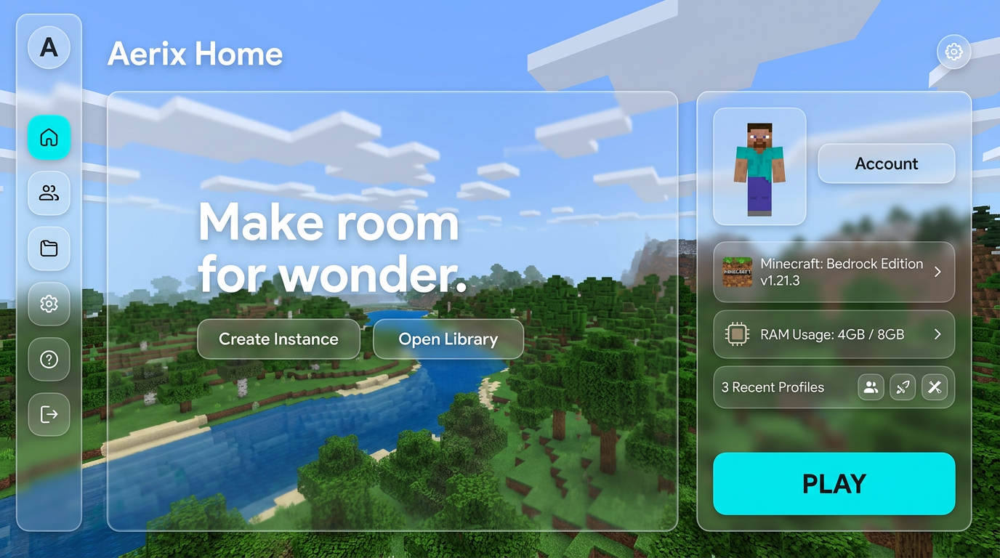
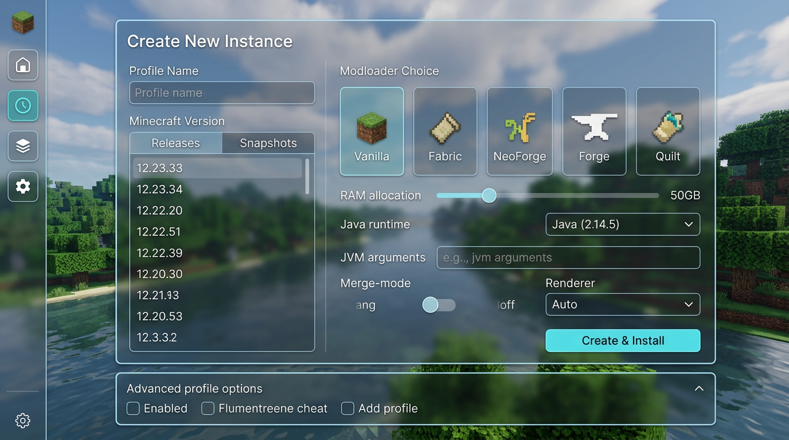
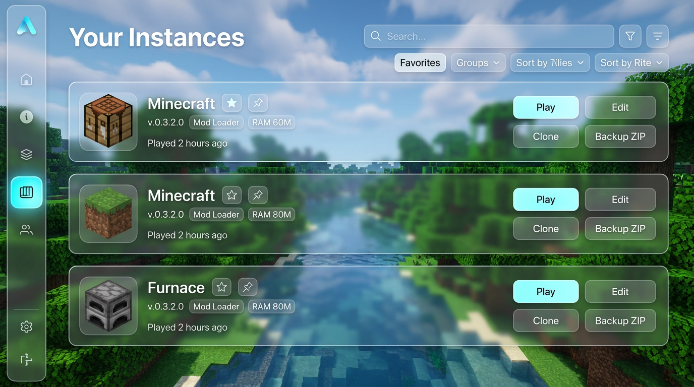
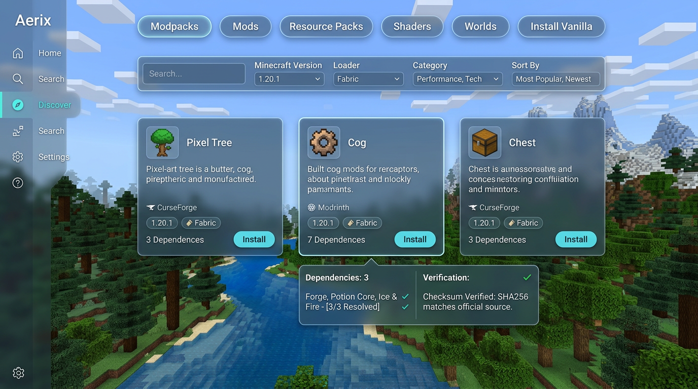
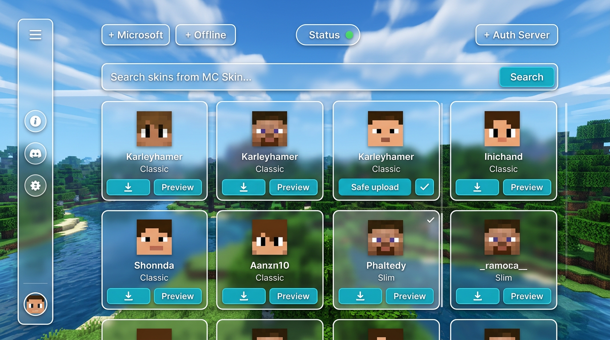
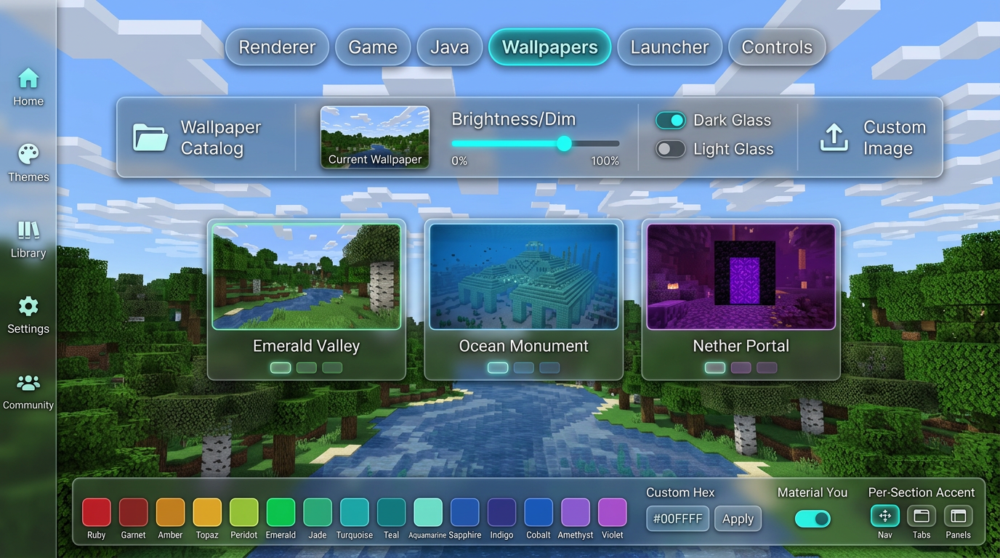
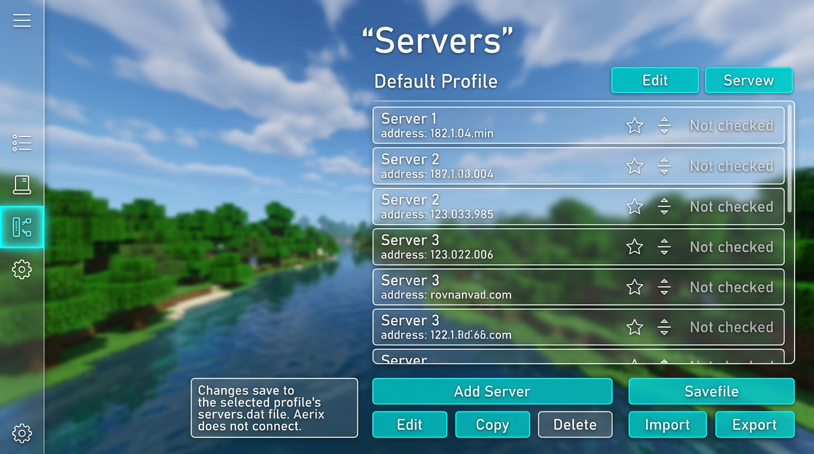
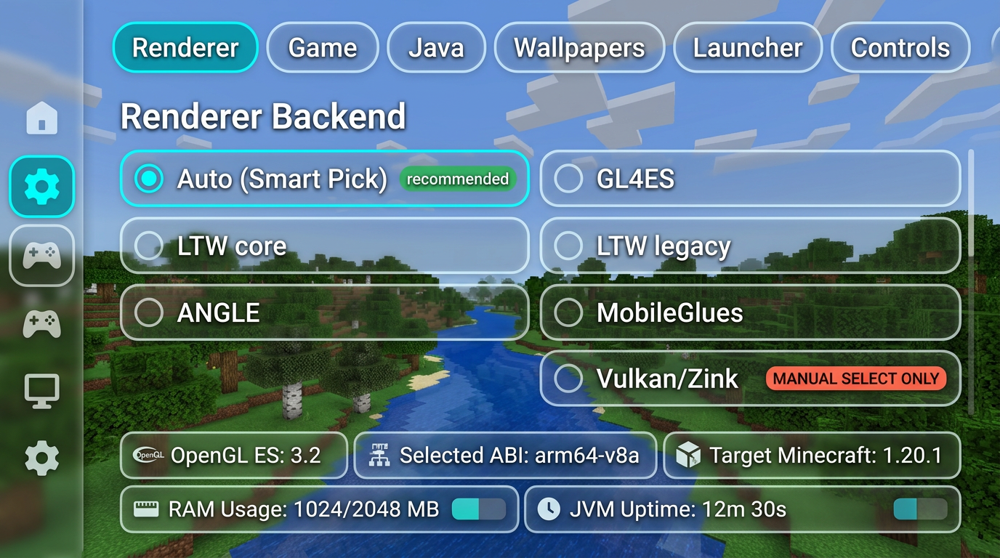
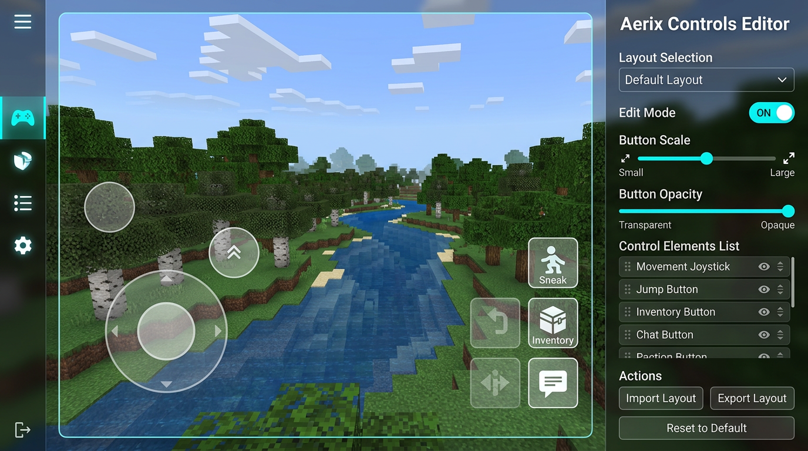
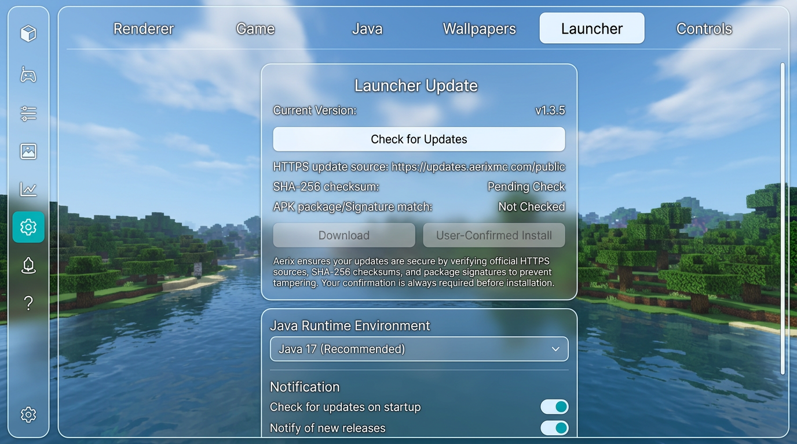

Aerix · Liquid-Glass Screen Mockups
Revised to follow your screenshots: Minecraft panorama backgrounds, a slim acrylic navigation rail, genuinely translucent glass panels, fine bright edges, and turquoise active states.
Visual direction: clear, landscape-first “liquid crystal” glass. These are separate screen concepts for review—not implemented UI and not a claim of pixel-perfect reproduction.

01 · Home Panorama hero, selected profile, account, memory, and Play. 
02 · Create Instance Version, loader, RAM, Java, JVM args, renderer, and create actions. 
03 · Instance Library Profiles, favorites, group/sort filters, clone, edit, and ZIP backup. 
04 · Discover Modpacks, mods, resource packs, shaders, filters, dependencies, and installs. 
05 · Skins Account entry points, username search, skin cards, preview, and upload flows. 
06 · Wallpapers & Themes Wallpaper gallery, glass modes, presets, custom hex, Material You, section accents. 
07 · Servers Per-profile server rows, favorites, ordering, import/export, and editing. 
08 · Renderer Capability-aware Auto, GL4ES, LTW, ANGLE, MobileGlues, manual-only Vulkan. 
09 · Controls Landscape touch-control preview, scale, opacity, import/export, and reset. 
10 · Launcher & Updates Public release check, HTTPS, integrity/signature checks, and user-confirmed install concept.
Click any screen to open its full-size PNG. Mockup labels describe a design target; feature implementation and device verification remain separate work.